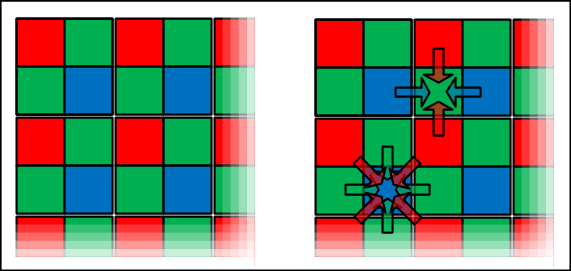
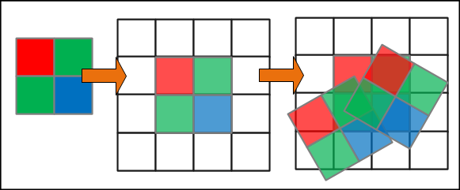
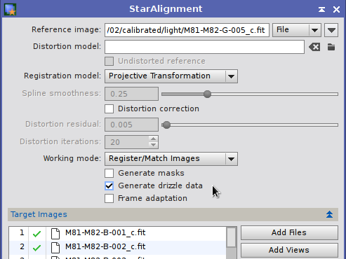
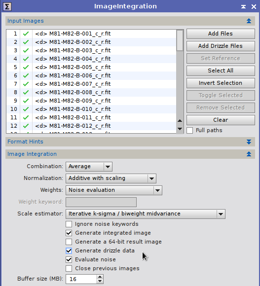
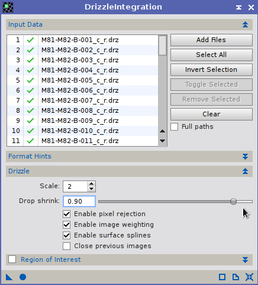
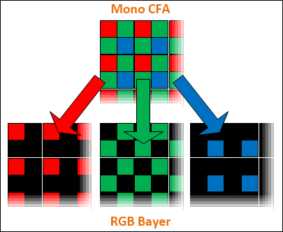

A script to convert a set of monochrome CFA images to RGB Bayer images and create a corresponding drizzle data file for use as part of a Bayer Drizzle workflow. [more]
Keywords: bayer drizzle, bayer, drizzle, BayerDrizzlePrep, DrizzleIntegration, debayer, BatchDebayer
[hide]
[hide]
The BayerDrizzlePrep script is used as part of a Bayer Drizzle workflow by converting source images and drizzle data files in to a format suitable for use with the DrizzleIntegration process. Note the BatchPreprocessing script can also perform Bayer drizzle but this script enables you to use the separate calibration, registration and integration processes instead of the more limited options available in BPP.
BayerDrizzlePrep supports single-image file formats only, with one mono CFA pattern channel per image.
When working with CFA images generated by a One Shot Colour (OSC) or DSLR camera, each pixel contains data obtained through one (typically Red, Green or Blue) colour filter, as shown at the left of the illustration below.
In order to obtain the missing colour data, the Debayer process interpolates it from adjacent pixels which have the other filters, as shown to the right of the illustration above. There are a number of debayering algorithms such as VNG, AHD, etc., but in all cases interpolation (estimating) is used to create the missing data. This leads to a loss of colour resolution and can create noticeable artefacts such as colour fringing around stars or close to edges of features.
Bayer drizzling refers to the use of the DrizzleIntegration process to generate full colour images from CFA source images. Bayer drizzling avoids the need for interpolation as the missing colour data is obtained from other images of the same part of the sky which were covered by different sensor pixels and therefore different filters.
The drizzle algorithm is a superresolution algorithm that uses multiple source images of a subject to create an image at a higher spatial resolution that that of source images. In general use, drizzle recovers spatial resolution that was available in the optical system but not fully sampled by the sensor. In the special case of Bayer drizzle, the same process is used to recover spatial resolution that was lost in each colour channel due to each being sampled only by sensor pixels with the relevant filter.
In order for the drizzle algorithm to be successful, three requirements must be met:
In general use, the DrizzleIntegration tool is used to create an output image with a higher spatial resolution than the source images, by setting the scale parameter to a value greater than one. In the illustration above, the original sensor pixels are represented by the grey boxes at the left. If scale of 2 is used, a new grid of pixels half the size of the originals is created, represented by the black boxes in the centre. The drop shrink parameter is set to a value less than one, which effectively makes the original pixels smaller as respresnted by the orange boxes.
As multiple dithered and registered images are combined on the right of the illustration, different sensor pixels contribute different amounts of signal to the new, smaller pixels. This is analagous to using a larger buckets of water to fill an array of smaller ones, hence the name 'drizzle'.
In the case of Bayer drizzle, the scale and drop shrink parameters are usually set to one to produce an output image with the same spatial resolution as the source images. This is necessary because of the lack of data in the unused pixels of each source colour channel. Producing a higher resolution image through Bayer drizzling requires a really huge amount of data. As can be seen from the illustration above, pixels created with filters contribute to the individual colour channels of each output channel, avoiding the need for the interpolation of missing data that occurs when debayering.
In order to undertake a Bayer Drizzle, it is first necessary to prepare the drizzle data files (.drz) for the source images by following the standard DrizzleIntegration workflow. This process involves calibration, registration and pre-integration of the source images.
The first step of the process is to calibrate the source images in the usual manner. This is acheived by use of the ImageCalibration and ImageIntegration tools to create master bias, master dark and master flat files and then calibrate the source images with them. Optionally the CosmeticCorrection tool may also be used following source image calibration.
These are standard PixInsight workflow tasks and there are no special considerations in respect of Bayer drizzle.
The next step is to debayer the calibrated source images using the Debayer tool or the BatchDebayer script. Debayering necessary to enable subsquent tools to generate the drizzle data files required for DrizzleIntegration. Use an appropriate debayering algorithm such as VNG or AHD (but not superpixel).
At the end of the whole process, the calibrated images generated at the end of Step 1 above. will be reused, but for now the workflow proceeds with the debayered images.
The drizzle algorithm works by projecting input image pixels on a finer grid of output pixels. This applies the same geometrical transformations used to register images in a normal preprocessing task, but instead of being an isolated step, image registration is performed during the drizzle integration process directly from calibrated data without interpolation.
Thus it is necessary to pre-compute and store the image registration transformations. To that end, the StarAlignment tool has an option to generate drizzle data, as shown below:
When this option is enabled, StarAlignment generates a drizzle data file for each registered image. Drizzle data files carry the .drz suffix and store all the information required by the DrizzleIntegration tool, including image registration data, statistical data, and pixel rejection maps. DrizzleIntegration supports the same image registration devices implemented by StarAlignment, including projective transformations (homographies) and two-dimensional surface splines (thin plates).
Note: StarAlignment will always create new drizzle data files with fresh registration data, so existing .drz files will always be replaced to start a new drizzle integration procedure.
The registered images generated above must be integrated with ImageIntegration, and the corresponding .drz files must also be selected. As shown below, a set of registered images is being pre-integrated as part of a drizzle procedure:
Firstly select the registered images to integrate as usual. Next select the drizzle data files generated by StarAlignment by clicking the Add Drizzle Files button.
Note: When a .drz file has been associated with an input image, a special "<d>" indicator is shown on the Input Images file list for the corresponding item. For a drizzle data file to be associated with its corresponding registered image, both files must have the same file name (only different suffixes).
Secondly, activate the Generate Drizzle Data option on ImageIntegration. Now proceed to integrate the images as usual: Find optimal pixel rejection parameters and maximize SNR in the result, just as for normal image integration tasks. Each time the ImageIntegration tool is run, the selected .drz files are updated with statistical and rejection data automatically. Ensure that the final integration is performed without a selected region of interest so that all rejection data is generated.
In order to proceed directly to a Bayer drizzle skip to Step 6 below. To test a standard drizzle integration first, complete this Step 5.
After StarAlignment and ImageIntegration, the drizzle data files (*.drz) are now ready for the DrizzleIntegration tool. Select the .drz files generated above, execute the tool globally and a drizzle integrated image will be generated.
The drizzle algorithm can be controlled with two main parameters and some subsidiary options:
DrizzleIntegration always generates two images: the result of the drizzle reconstruction and a drizzle weights image. The value of each pixel on the weights image represents the (normalized) amount of data gathered by the corresponding pixel on the integrated result. Note that the integrated image has already been divided by the weights image when both of them are made available as new image windows.
The drizzle data file generated at the end of Step 4. above stores all the data required to perform a drizzle integration process:
a. The full file path of the source drizzle image (calibrated, debayered, but not registered). This is the image that will be integrated with DrizzleIntegration.
b. The full file path of the registration target image (calibrated, debayered and registered). This was the image that was integrated in Step 4. above to compute normalization parameters, image weights, and pixel rejection data. This image will not be used in the final drizzle integration process.
c. The geometry of the reference registration image. This defines the geometry of the final drizzle-integrated image (multiplied by the drizzle output scale).
d. The geometrical transformations necessary to register the image. This may include a projective transformation matrix and/or surface spline control points and parameters, if local distortion correction is being used. These transformations are applied by DrizzleIntegration to compute the geometry of each 'drop' that 'rains' over the drizzle-integrated image.
e. The coordinates of each rejected pixel.
f. Image normalization parameters, including estimates of statistical location and scale.
g. Image weighting parameters. These are normally based on noise estimates computed during Step 1 above (and stored as XISF properties and FITS keywords in the image), but can also be generated from statistical parameters or image properties/keywords by ImageIntegration during Step 4 above if necessary.
Drizzle data files are created by the StarAlignment tool with items a, b, c and d. The ImageIntegration tool updates drizzle files with items e, f and g.
In order to conduct a Bayer drizzle, it is necessary to replace item a. with the path to the calibrated mono CFA image, that is, the final images generated at the end of Step 1 above after calibration (and optionally cosmeticisation) but before applying the debayering process. However, the DrizzleIntegration process cannot use the monochrome CFA data directly because the RGB color channels would become intermixed in the integrated image.
Thus the mono CFA must be split into three separate R, G and B channels as shown above, with black pixels replacing the missing data in each channel, and saved as a three channel RGB image. This is known as a RGB Bayer image. The DrizzleIntegration process can then be applied to this RGB Bayer as if it was working with a normal RGB image.
The BatchPreprocessing script does this automatically, including generation of separate RGB Bayer images and corresponding drizzle data files. The downside of BPP is that the user has less control over some of the individual processes involved in calibrating, registering and integrating the source images.
The same task can also be implemented manually, with the help of Nikolay's SplitCFA tool to convert the mono CFA images to Bayer RGB ones. The advantage over BPP is that there is full control over each step of the workflow. The downside is that user is then responsible for renaming and moving the RGB Bayer images so that they replace the images in a. above. This process is tedious and prone to error for more than a handful of source images.
The BayerDrizzlePrep script also allows full control over the workflow, but removes most of the tedium by automatically creating both the RGB Bayer images needed along with new copies of the drizzle data files linked to them.
Note: The Bayer drizzle workflow can only be implemented as a fully automatic process using the BatchPreprocessing script. Using any other method, including the BayerDrizzlePrep script, there is no foolproof automatic means by which the source monochrome CFA images can be associated with the corresponding drizzle data file. This is because the drizzle data files are first created by the StarAlignment process from the debayered source images. Thus there is no reliable rule to impute the names and locations of the mono CFA images that preceded the debayer step.
Therefore the user is responsible for ensuring that each mono CFA images in the Images to Convert list has a corresponding drizzle data file in the Drizzle Files to Convert list, and that both lists are in the same order.
Using the BayerDrizzlePrep script requires the user to select source image files and their corresponding drizzle data files, specify the Bayer pattern of the source image files and the output directory where the converted image and drizzle data files will be written.
The Images to Convert list contains the source images to be converted. These should be calibrated and (optionally) cosmeticised, but not yet debayered images, as created at the end of Step 1 of the Bayer drizzle workflow.
Note: There must be an equal number of image files and drizzle data files in the lists and they must be in the same order. The BayerDrizzlePrep script cannot automatically match the image file with its corresponding drizzle data file. Selecting an image file in the Images to Convert list will select the corresponding drizzle data file in the Drizzle Files to Convert list.
The Drizzle Files to Convert list contains the completed drizzle data files (.drz) to be converted. These should be the complete drizzle files as created at the end of Step 4 of the Bayer drizzle workflow.
Note: There must be an equal number of image files and drizzle data files in the lists and they must be in the same order. The BayerDrizzlePrep script cannot automatically match the image file with its corresponding drizzle data file. Selecting a drizzle data file in the Drizzle Files to Convert list will select the corresponding image file in the Images to Convert list.
Documentation Copyright © 2014-2015 Pleiades Astrophoto S.L., Copyright © 2014-2015 Ian Lauwerys. All Rights Reserved.